autoplot.radf_obj takes radf_obj and radf_cv and returns a faceted ggplot object.
shade is used as an input to shape_opt. shade modifies the
geom_rect layer that demarcates the exuberance periods.
Usage
# S3 method for class 'radf_obj'
autoplot(
object,
cv = NULL,
sig_lvl = 95,
option = c("gsadf", "sadf"),
min_duration = 0L,
select_series = NULL,
nonrejected = FALSE,
shade_opt = shade(),
trunc = TRUE,
include_negative = "DEPRECATED",
...
)
# S3 method for class 'radf_obj'
autoplot2(
object,
cv = NULL,
sig_lvl = 95,
option = c("gsadf", "sadf"),
min_duration = 0L,
select_series = NULL,
nonrejected = FALSE,
trunc = TRUE,
shade_opt = shade(),
...
)
shade(
fill = "grey55",
fill_negative = fill,
fill_ongoing = NULL,
opacity = 0.3,
...
)Arguments
- object
An object of class
obj.- cv
An object of class
cv.- sig_lvl
Significance level. It could be one of 90, 95 or 99.
- option
Whether to apply the "gsadf" or "sadf" methodology (default = "gsadf").
- min_duration
The minimum duration of an explosive period for it to be reported (default = 0).
- select_series
A vector of column names or numbers specifying the series to be used in plotting. Note that the order of the series does not alter the order used in plotting.
- nonrejected
If TRUE, plot all variables regardless of rejecting the NULL at the 5 percent significance level.
- shade_opt
Shading options, typically set using
shadefunction.- trunc
Whether to remove the period of the minimum window from the plot (default = TRUE).
- include_negative
Argument name is deprecated and substituted with
nonrejected.- ...
Further arguments passed to
ggplot2::facet_wrapandggplot2::geom_rectforshade.- fill
The shade color that indicates the exuberance periods with positive signal
- fill_negative
The shade color that indicates the exuberance periods with positive signal
- fill_ongoing
The shade color that indicates the exuberance periods that are ongoing the null hypothesis.
- opacity
The opacity of the shade color aka alpha.
Value
A ggplot
Examples
# \donttest{
rsim_data <- radf(sim_data_wdate)
#> Using `date` as index variable.
autoplot(rsim_data)
#> Using `radf_crit` for `cv`.
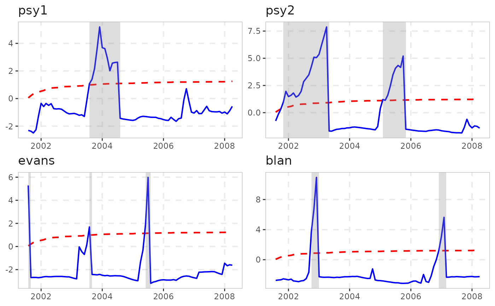
# Modify facet_wrap options through ellipsis
autoplot(rsim_data, scales = "free_y", dir = "v")
#> Using `radf_crit` for `cv`.
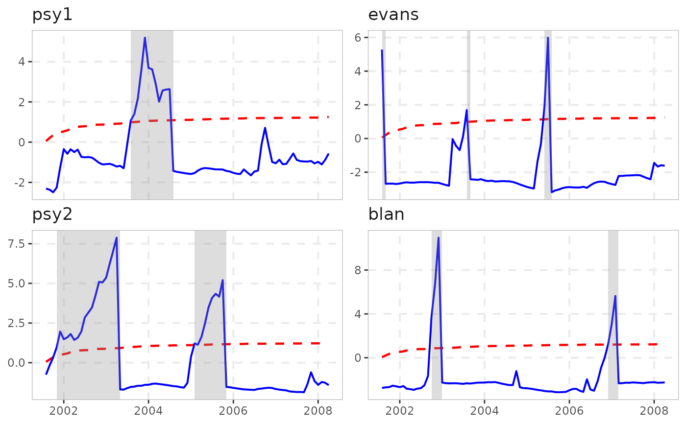
# Modify the shading options
autoplot(rsim_data, shade_opt = shade(fill = "pink", opacity = 0.5))
#> Using `radf_crit` for `cv`.
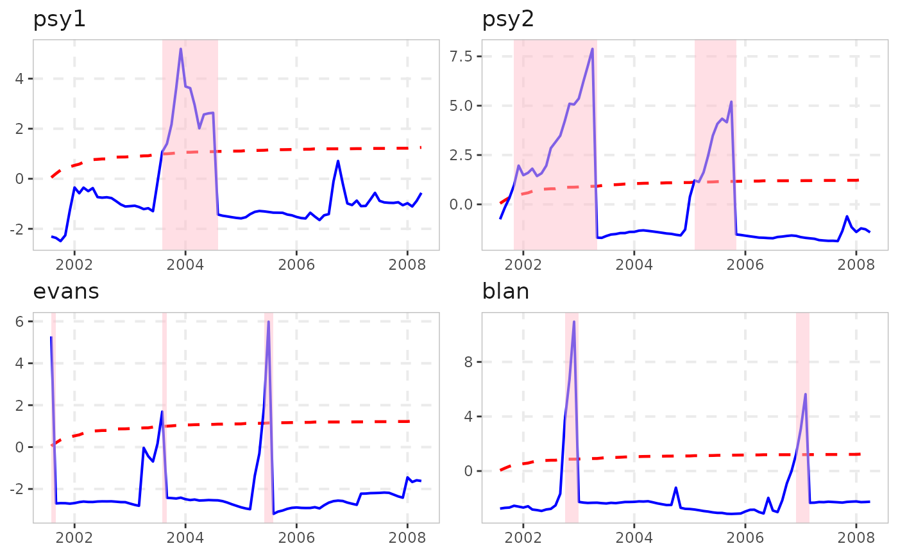
# Allow for nonrejected series to be plotted
autoplot(rsim_data, nonrejected = TRUE)
#> Using `radf_crit` for `cv`.
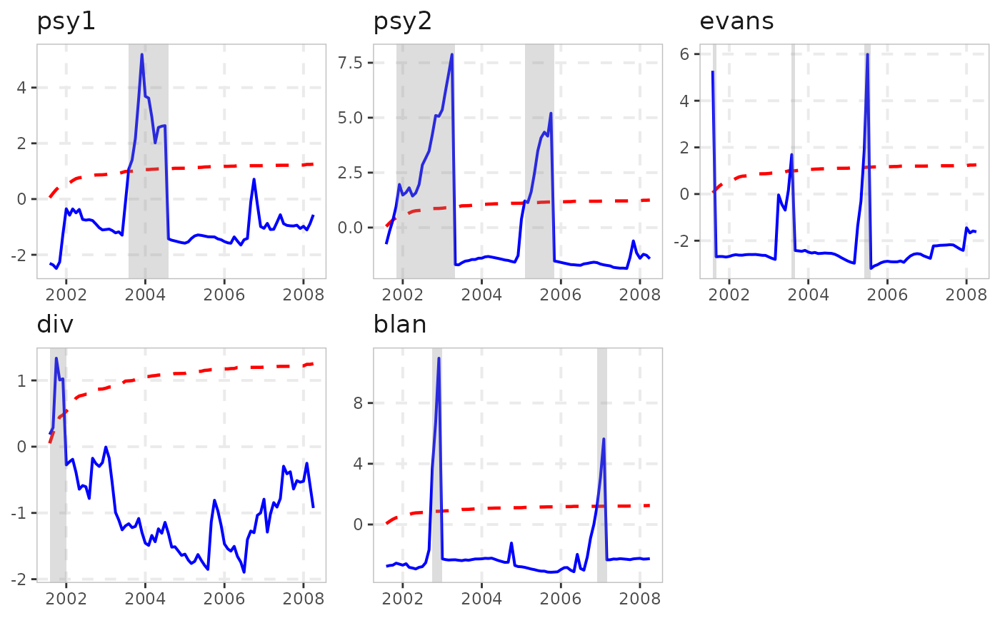
# Remove the shading completely (2 ways)
autoplot(rsim_data, shade_opt = NULL)
#> Using `radf_crit` for `cv`.
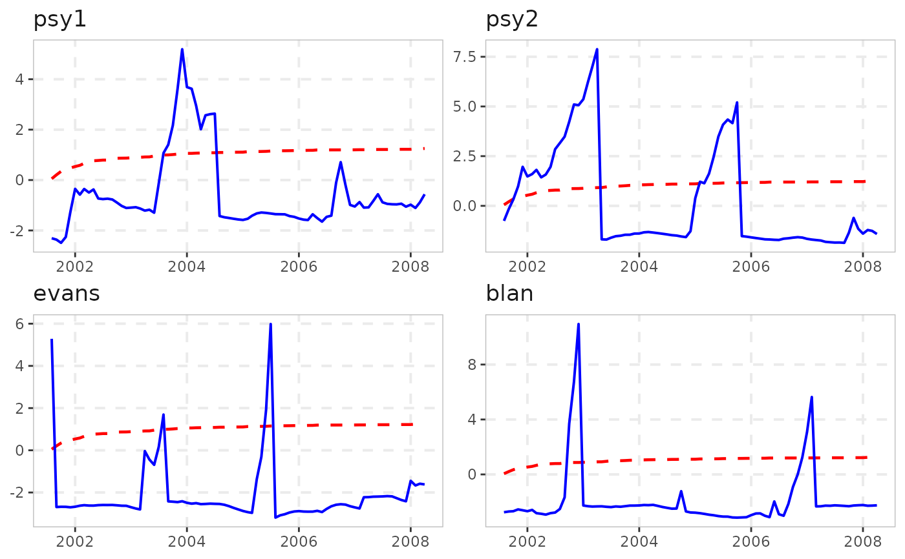
autoplot(rsim_data, shade_opt = shade(opacity = 0))
#> Using `radf_crit` for `cv`.
 # Plot only the series with the shading options
autoplot2(rsim_data)
#> Using `radf_crit` for `cv`.
# Plot only the series with the shading options
autoplot2(rsim_data)
#> Using `radf_crit` for `cv`.
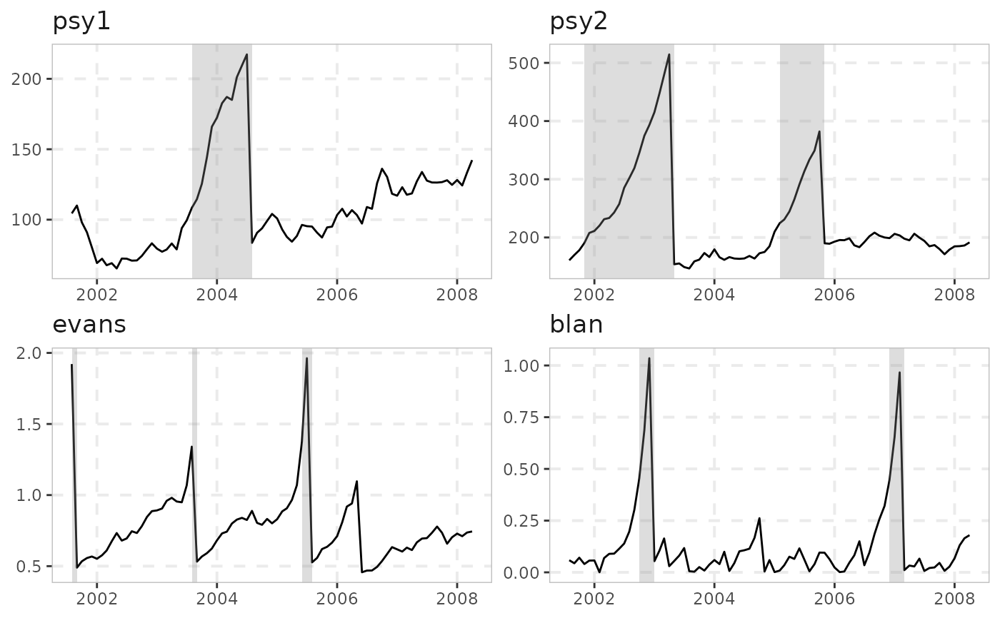
autoplot2(rsim_data, trunc = FALSE) # keep the minw period
#> Using `radf_crit` for `cv`.
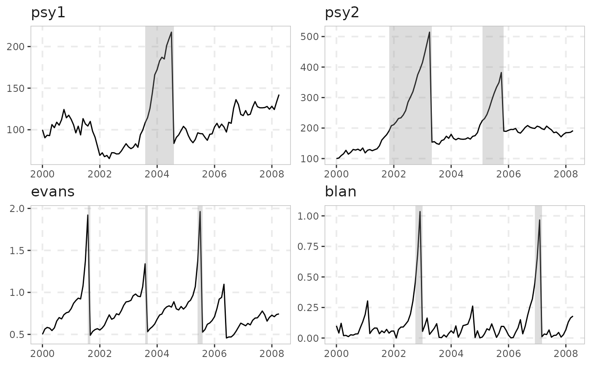
# We will need ggplot2 from here on out
library(ggplot2)
# Change (overwrite) color, size or linetype
autoplot(rsim_data) +
scale_color_manual(values = c("black", "black")) +
scale_size_manual(values = c(0.9, 1)) +
scale_linetype_manual(values = c("solid", "solid"))
#> Using `radf_crit` for `cv`.
#> Scale for colour is already present.
#> Adding another scale for colour, which will replace the existing scale.
#> Scale for size is already present.
#> Adding another scale for size, which will replace the existing scale.
#> Scale for linetype is already present.
#> Adding another scale for linetype, which will replace the existing scale.
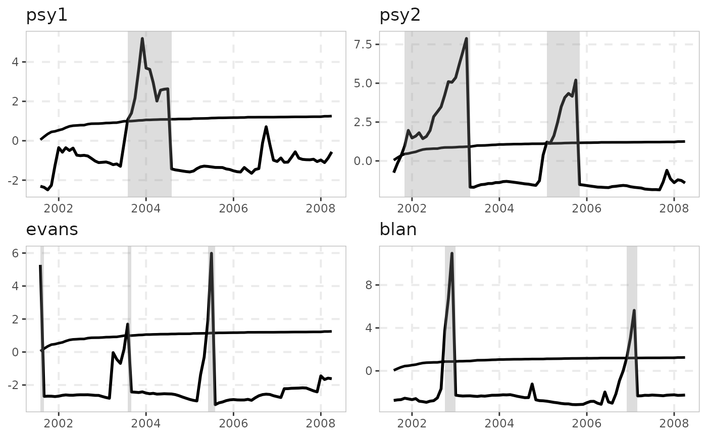
# Change names through labeller (first way)
custom_labels <- c("psy1" = "new_name_for_psy1", "psy2" = "new_name_for_psy2")
autoplot(rsim_data, labeller = labeller(.default = label_value, id = as_labeller(custom_labels)))
#> Using `radf_crit` for `cv`.
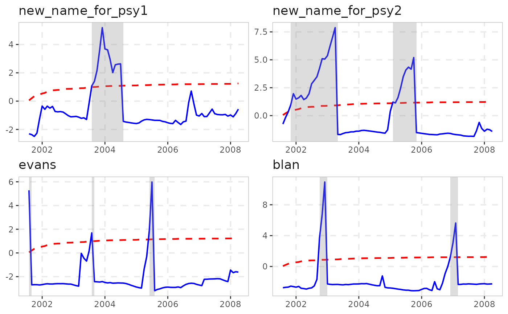
# Change names through labeller (second way)
custom_labels2 <- series_names(rsim_data)
names(custom_labels2) <- custom_labels2
custom_labels2[c(3, 5)] <- c("Evans", "Blanchard")
autoplot(rsim_data, labeller = labeller(id = custom_labels2))
#> Using `radf_crit` for `cv`.
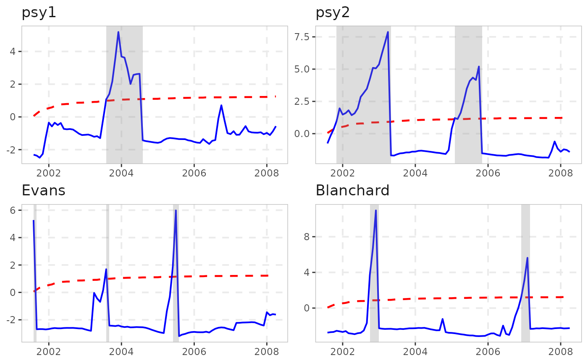
# Or change names before plotting
series_names(rsim_data) <- LETTERS[1:5]
autoplot(rsim_data)
#> Using `radf_crit` for `cv`.
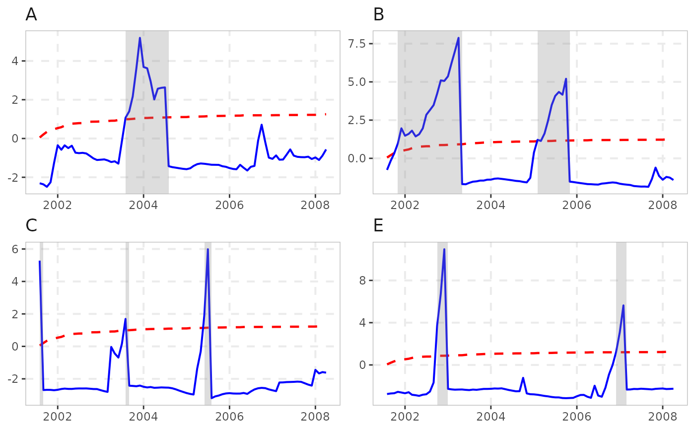
# Change Theme options
autoplot(rsim_data) +
theme(legend.position = "right")
#> Using `radf_crit` for `cv`.
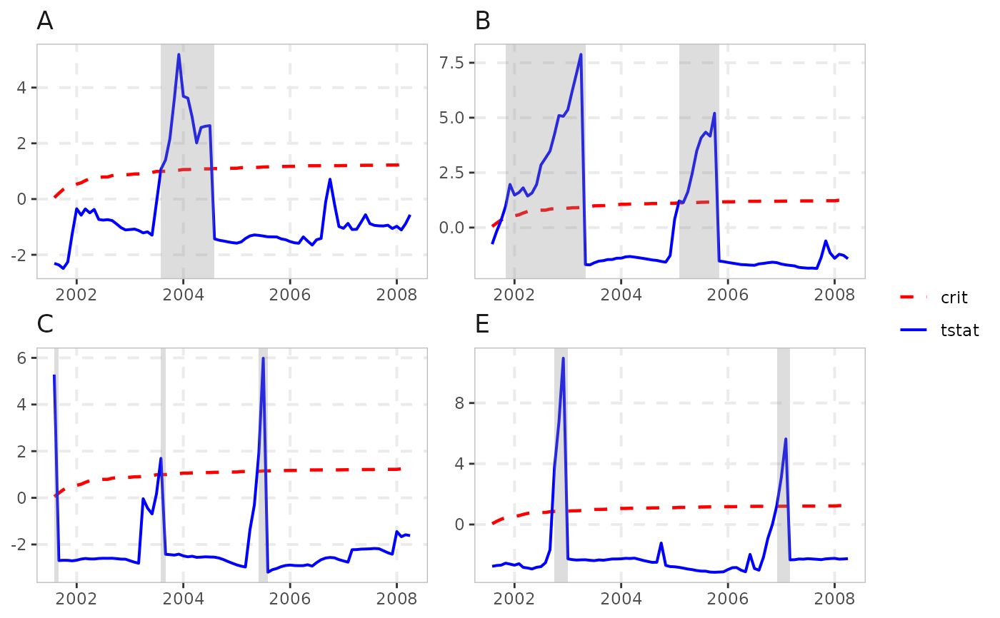
# }